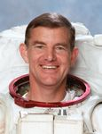

Lyndon B. Johnson Space Center
Houston, Texas 77058
|
National Aeronautics and Space Administration Lyndon B. Johnson Space Center Houston, Texas 77058 |
 |
Biographical Data |
||
James S. Voss (Colonel, USA, Ret.)
NASA ASTRONAUT (FORMER)
PERSONAL DATA: Born March 3, 1949, in Cordova, Alabama, but considers Opelika, Alabama, to be his hometown. Married to the former Suzan Curry of Birmingham, Alabama. They have one daughter. He enjoys woodworking, skiing, softball, racquetball, scuba diving, and flying an airplane he built himself. As an undergraduate, he participated on the Auburn University Wrestling Team.
EDUCATION: Graduated from Opelika High School, Opelika, Alabama; received a bachelor of science degree in Aerospace Engineering from Auburn University in 1972, a master of science degree in Aerospace Engineering Sciences from the University of Colorado in 1974 and an honorary Doctorate degree from the University of Colorado in 2000.
SPECIAL HONORS: Distinguished Summer Faculty, University of Colorado (2004), University of Colorado Distinguished Engineering Alumni Award (2003), National Aeronautic Association Gagarin Gold Medal (2003), Alabama Engineering Hall of Fame (2002), NASA Distinguished Service Medal (2001); U.S. Army Distinguished Service Medal (1999); NASA Outstanding Leadership Award (1996); NASA Exceptional Service Medal (1994); 5 NASA Space Flight Medals (1992, 1993, 1995, 2000, 2001); Defense Meritorious Service Medal (1993); Auburn University Outstanding Engineering Alumnus Award (1992), Defense Superior Service Medal (1992); Outstanding Student Award, USN Test Pilot School (1983); William P. Clements, Jr. Award for Excellence in Education as the outstanding Professor at the U.S. Military Academy (1982); Meritorious Service Medal (1982); NASA Summer Faculty Research Fellowship (1980); Commandant’s List - Infantry Officer Advanced Course (1979); Army Commendation Medal (1978); Honor Graduate and Leadership Award - Ranger School (1975); Distinguished Graduate - Infantry Officer Basic Course (1974).
EXPERIENCE: Upon graduation from Auburn and commissioning as a 2nd Lieutenant, Voss went directly to the University of Colorado to obtain his masters degree under the Army Graduate Fellowship Program. After attending the Infantry Basic Course, Airborne and Ranger schools, he served with the 2nd Battalion 48th Infantry in Germany as a platoon leader, intelligence staff officer, and company commander. On returning to the United States, he attended the Infantry Officer Advanced Course, and then taught for three years in the Department of Mechanics at the U.S. Military Academy. After attending the U.S. Naval Test Pilot School and the Armed Forces Staff College, Voss was assigned to the U.S. Army Aviation Engineering Flight Activity as a Flight Test Engineer/Research and Development Coordinator. He was involved in several major flight test projects before being detailed to NASA’s Lyndon B. Johnson Space Center.
NASA EXPERIENCE: Voss started working at the Johnson Space Center in November 1984. In his capacity as a Vehicle Integration Test Engineer, he supported Shuttle and payload testing at the Kennedy Space Center for STS 51-D, 51-F, 61-C and 51-L. He participated in the STS 51-L accident investigation, and supported the resulting reviews dedicated to returning the Space Shuttle safely to flight. Selected as an astronaut candidate by NASA in June 1987, Voss completed a one-year training and evaluation program in August 1988, which qualified him for assignment as a mission specialist on Space Shuttle flights. He has worked as a flight crew representative in the area of Shuttle safety, as a CAPCOM, providing a communications interface between ground controllers and flight crews during simulations and Shuttle flights, and as the Astronaut Office Training Officer. Jim served as the back-up crew member for two missions to the Russian Space Station Mir. During this time he lived and trained for 2 years at the Gagarin Cosmonaut Training Center in Star City, Russia. Voss served as a mission specialist on STS-44 in 1991 and STS-53 in 1992, was the payload commander on STS-69 in 1995, and again was a mission specialist on STS-101 in 2000. During 2001 he lived and worked aboard the International Space Station as a member of the Expedition-2 crew. A veteran of five space flights, Voss has logged 201 days in space, including four spacewalks totaling 22 hours and 35 minutes of EVA time. Jim’s last role with NASA was as the Deputy for Flight Operations in the Space Station Program Mission Integration and Operations Office.
Jim retired from NASA in 2003 to serve as Associate Dean of Engineering for External Affairs at Auburn University, assisting with student projects and development for the College and teaching a class in Aerospace Engineering on human spacecraft design. Jim currently serves as Vice President for Space Exploration Systems, Transformational Space Corporation, with responsibility for all their technical space activities, including the design and fabrication of a human spacecraft to support ISS.
SPACE FLIGHT EXPERIENCE: STS-44 Atlantis (November 24 - December 1, 1991) launched at night from the Kennedy Space Center (KSC), Florida and returned to land on the lakebed at Edwards Air Force Base, California. The primary mission objective was accomplished with the successful deployment of a Defense Support Program (DSP) satellite with an Inertial Upper Stage (IUS) rocket booster. In addition, the crew also conducted two Military Man in Space experiments, three radiation monitoring experiments, and numerous medical tests to support longer duration Shuttle flights. The mission was concluded after 110 orbits of the Earth in 166 hours, 50 minutes and 42 seconds.
STS-53 Discovery (December 2-9, 1992) launched from Kennedy Space Center, Florida, and returned to land at Edwards Air Force Base, California. The five-man crew deployed the classified Department of Defense payload DOD-1 and also performed several Military Man in Space and NASA experiments. Mission duration was 115 orbits of the Earth in 175 hours, 19 minutes and 17 seconds.
STS-69 Endeavour (September 7-18, 1995) launched from and returned to land at the Kennedy Space Center, Florida. On this mission Jim served as Payload Commander. The crew successfully deployed and retrieved a SPARTAN satellite and the Wake Shield Facility. Also on board was the International Extreme Ultraviolet Hitchhiker payload, and numerous secondary payloads and medical experiments. Jim conducted an EVA (space walk) lasting 6 hours 46 minutes to test space suit modifications and to evaluate procedures and tools to be used to construct the International Space Station. Mission was accomplished in 171 orbits of the Earth in 260 hours and 28 minutes.
STS-101 Atlantis (May 19-29, 2000) was the third Shuttle mission devoted to International Space Station (ISS) construction. The crew transported and installed over 3,000 pounds of equipment and supplies, and repaired Station electrical and environmental control components. Jim conducted his second space walk lasting 6 hours and 44 minutes to complete Station assembly tasks. Mission duration was 155 orbits of the Earth in 236 hours and 9 minutes.
The Expedition 2 crew launched on March 8, 2001 aboard STS-102 Discovery and successfully docked with the International Space Station on March 9, 2001. As a member of the second crew to live on ISS, Voss served aboard the space station for a total of 163 days and returned to earth with the STS-105 crew on August 22, 2001. During the expedition, Jim conducted spacewalks in both U.S. and Russian space suits and was the first person to operate the Space Station Robotic Manipulator System, Canadarm2. Other highlights of the mission included assembly tasks, 18 scientific experiments, a Soyuz capsule flyaround, addition of the joint airlock to ISS and 5 visiting spacecraft. In completing this mission, Voss logged a total of 167 days in space, including 2 spacewalks totaling 9 hours and 5 minutes of EVA time.
OCTOBER 2005